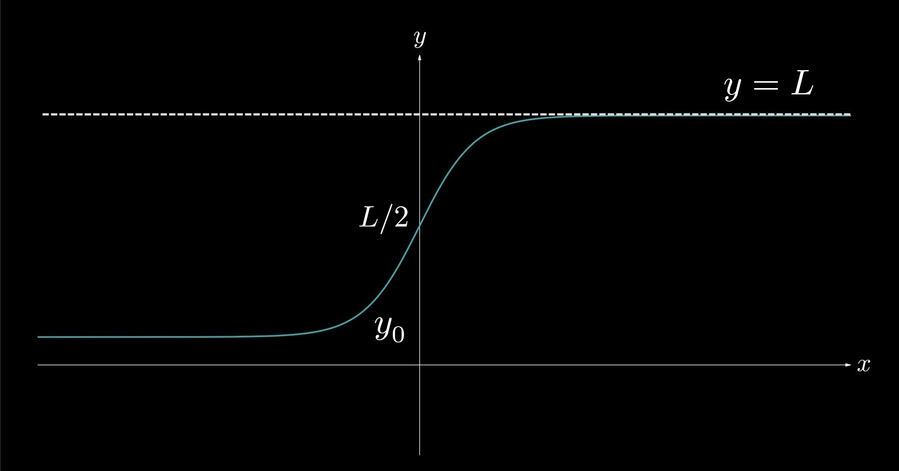
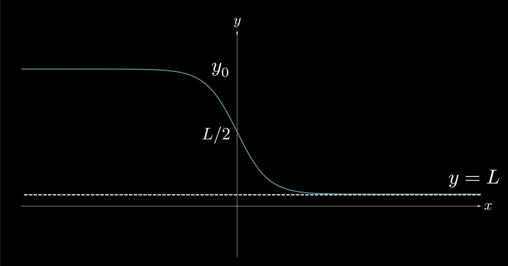

7.7 — Logistic Growth
In this section we will discuss Logistic Growth. The motivation for this topic stemmed from the desire to model population growth and was first pioneered by Pierre Verhulst (1804–1849), a Belgian mathematician specializing in number theory. In ecosystems, it is necessary to introduce a function that increases exponentially while the population is small but eventually converges to an equilibrium value— known as the "carrying capacity," the maximum population that the ecosystem can support. Exponential growth models (covered in 7.6) do not meet these criteria because they do not converge to a finite value. Through the work of Verhulst and other mathematicians who popularized his initial ideas, exponential growth models were modified to include an equilibrium value to which they converge.
Figure 1. A logistic growth function exhibits exponential growth at first but then converges to the horizontal asymptote \(L\).
The differential equation representing logistic growth is given by
$$\frac{\textrm{d} y}{\textrm{d} x} = ky \left(1 - \frac{y}{L}\right),$$ (Logistic Growth Differential Equation)
where \(k\) is a growth constant and \(L\) denotes the equilibrium—the value to which \(y\) converges. Compare this to an exponential growth model, whose differential equation is represented as$$\frac{\textrm{d} y}{\textrm{d} x} = k y.$$ (Exponential Growth Differential Equation)
Notice that the term \(\left(1 - \frac{y}{L}\right)\) serves as an inhibitor—slowing down the growth of the population as \(y\) increases. The solution to the differential equation representing logistic growth is given by$$y = \frac{L}{1 + be^{-kt}},$$
where \(b\) is another constant. You can verify this solution by attempting to solve the differential equation for logistic growth. We will solve the differential equation at the end of the section.A population of zebras, \(N\), grows according to the differential equation \(\frac{\textrm{d} N}{\textrm{d} t} = 0.4N\left(2 - \frac{N}{300}\right),\) where \(t\) represents time measured in years. There are originally \(20\) zebras in the population. What are (a) the rate of change of the population when there are \(50\) zebras; (b) the population's carrying capacity; and (c) the range of \(N\)?
(a) The rate of change of \(N\) when \(N = 50\) is given by \(\frac{\textrm{d} N}{\textrm{d} t}\Big|_{N = 50} = 0.4(50) \left(2 - \frac{50}{300} \right) = \frac{110}{3}\) zebras per year.
(b) The population's carrying capacity can be found by setting \(\frac{dN}{dt}\) equal to \(0\), as the curve of \(N(t)\) will flatten at that value. Thus, \(0.4N \left(2 - \frac{N}{300}\right) = 0 \implies N = 0\) or \(N = 600\). The carrying capacity is therefore \(600\).
(c) The range of \(N\) is \([20, 600)\). Notice that we do not include \(600\) in the interval, as it is the vertical asymptote of \(N\).
Now let us discuss some properties of logistic growth models. For \(L \gt y_0\), \(\frac{\textrm{d} ^2y}{\textrm{d} x^2} \gt 0 \) for \(y \lt \frac{L}{2}\), and \(\frac{\textrm{d} ^2y}{\textrm{d} x^2} \lt 0 \) for \(y \gt \frac{L}{2}\). Notice, in Figure 1, that the function \(y\) is concave up for \(y_0 \lt y \lt \frac{L}{2}\) and concave down for \(\frac{L}{2} \lt y \lt L \). We can also conclude that \(y\) is growing the fastest at \(y = \frac{L}{2}\).
In situations of logistic decay, where \(L \lt y_0\), \(y\) decays exponentially before converging to \(L\), as shown in Figure 2. These functions exhibit the same properties as discussed for logistic growth models.
Figure 2. A function exhibiting logistic decay will begin to decrease exponentially but will then converge to the equilibrium value \(L\).
We see that, in logistic decay models (\(L \lt y_0\)), \(\frac{\textrm{d} ^2y}{\textrm{d} x^2} \lt 0 \) for \(y \gt \frac{L}{2}\), and \(\frac{\textrm{d} ^2y}{\textrm{d} x^2} \gt 0 \) for \(y \lt \frac{L}{2}\). Notice that the function in Figure 2 is concave down for \(y \gt \frac{L}{2}\) and concave up for \(y \lt \frac{L}{2}\), exhibiting homogeneity in our discussed properties for logistic growth. The one difference, however, is that \(y\) is decreasing the fastest at \(y = \frac{L}{2}\).
Facts About Logistic Functions:
\(\frac{\textrm{d} ^2 y}{\textrm{d} x^2} \gt 0\) for \(y \lt \frac{L}{2}\).
\(\frac{\textrm{d} ^2 y}{\textrm{d} x^2} \lt 0\) for \(y \gt \frac{L}{2}\).
For logistic growth functions, \(y\) grows the fastest at \(y = \frac{L}{2}\). For logistic decay functions, \(y\) decays the fastest at \(y = \frac{L}{2}\).
The population of a small town grows logistically according to the rate \(\frac{\textrm{d}P}{\textrm{d}t} = 0.02P\left(\frac{6780 - P}{6780}\right)\), where \(t\) represents time measured in years. There are originally \(2000\) people in the town. What are (a) the range of \(P\); (b) the value of \(P\) at which the population is growing the fastest; and (c) the population \(10\) years later?
(a) The range of \(P\) is \([2000, L)\), where \(L\) is the population carrying capacity. To find \(L\) let \(\frac{\textrm{d} P}{\textrm{d} t} = 0\): $$ \frac{\textrm{d} P}{\textrm{d} t} = 0.02P \left(\frac{6780 - P}{6780}\right) = 0 \implies P = \cancel{0}, 6780.$$ Thus, the range is \([2000, 6780)\).
(b) The population is growing the fastest when \(P = \frac{L}{2} = \bbox[border: 2px solid white, 2pt]{3390}\).
(c) Recall that the solution to the differential equation is \(P(t) = \frac{L}{1 + be^{-kt}}\). In this case \(L = 6780\) and \(k = 0.02\). We also know that \(P(0) = 2000\). Thus, substituting yields $$P(0) = \frac{6780}{1 + be^{-0.02(0)}} = \frac{6780}{1 + b} = 2000 \implies b = 2.39.$$ Therefore, $$P(10) = \frac{6780}{1 + 2.39e^{-0.02(10)}} = \bbox[border: 2px solid white, 2pt]{2293}.$$
Now we will verify the solution to the differential equation. $$ \frac{\textrm{d}y}{\textrm{d}x} = ky\left(1 - \frac{y}{L}\right). $$
\((1)\)
Performing separation of variables yields $$ \frac{\textrm{d}y}{y \left(1 - \frac{y}{L}\right)} = k \, \textrm{d}x. $$\((2)\)
We will integrate both sides: $$ \int \frac{\textrm{d}y}{y \left(1 - \frac{y}{L}\right)} = \int k \, \textrm{d}x. $$\((3)\)
For the left-hand side of the equation, we must break up the integrand into partial fractions. Thus, $$ \int \frac{\textrm{d}y}{y \left(1 - \frac{y}{L}\right)} = \int \frac{A}{y} + \frac{B}{\left(1 - \frac{y}{L}\right)} \, \textrm{d}y = \int k \, \textrm{d}x. $$\((4)\)
We now perform the partial fraction decomposition: $$ \frac{A\left(1 - \frac{y}{L}\right) + By}{y\left(1 - \frac{y}{L}\right)} = \frac{1}{y\left(1 - \frac{y}{L}\right)} $$ $$ A - \frac{Ay}{L} + By = 1 $$ $$ A + \left(B - \frac{y}{L}\right) = 1 \implies A = 1, B = \frac{1}{L}.$$\((5)\)
We may therefore rewrite the equation as $$ \int \frac{1}{y} + \frac{1}{L - y} \, \textrm{d} y = \int k \, \textrm{d} x. $$\((6)\)
Integrating both sides yields $$ \ln\left| \frac{y}{L - y} \right| = kx + C_1$$ $$ \frac{y}{L - y} = Ce^{kx}, $$\((7)\)
where \( C = e^{C_1} \). Solving for \(y\) gives $$ \frac{L - y}{y} = be^{-kx} $$ $$ y = \frac{L}{1 + be^{-kx}}, $$\((8)\)
where \(b = \frac{1}{C}\). (\(b\) is our final constant, so we need not worry about the intermediate constants.) We now have our solution to the differential equation for logistic growth!